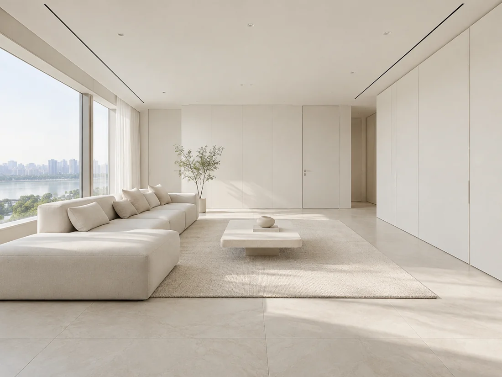
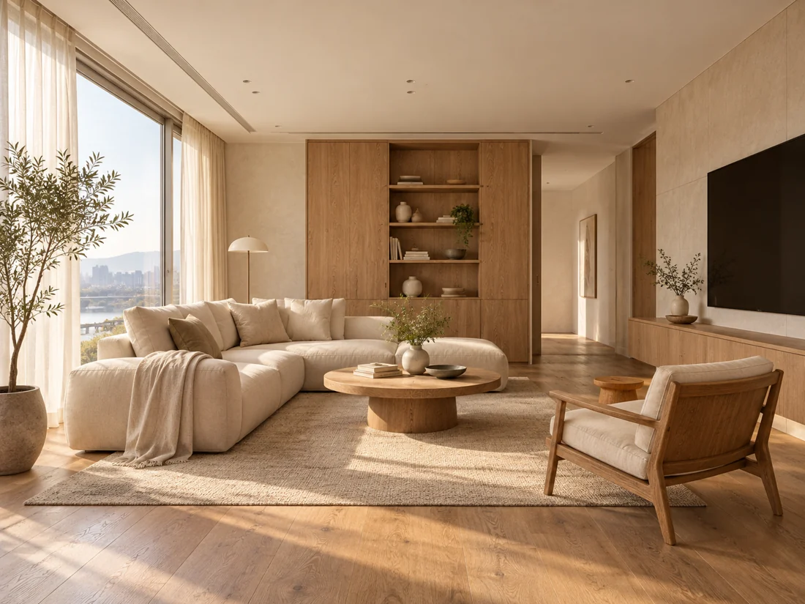
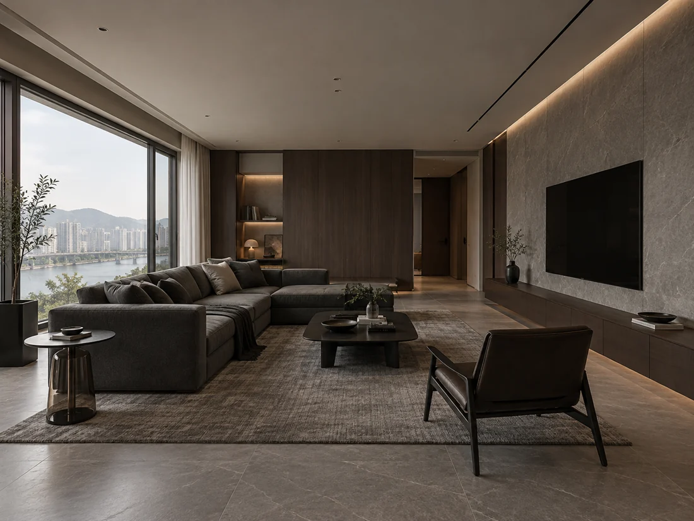
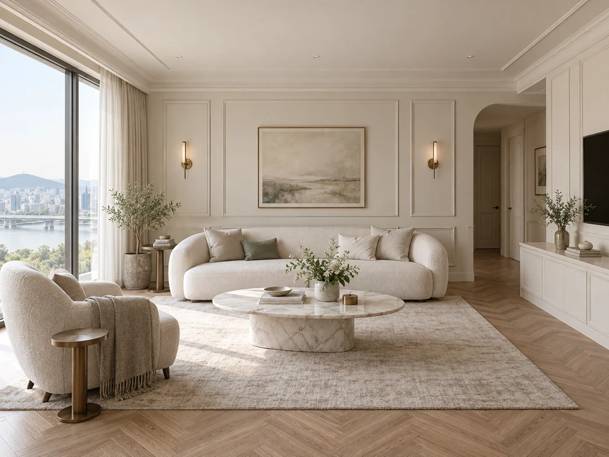
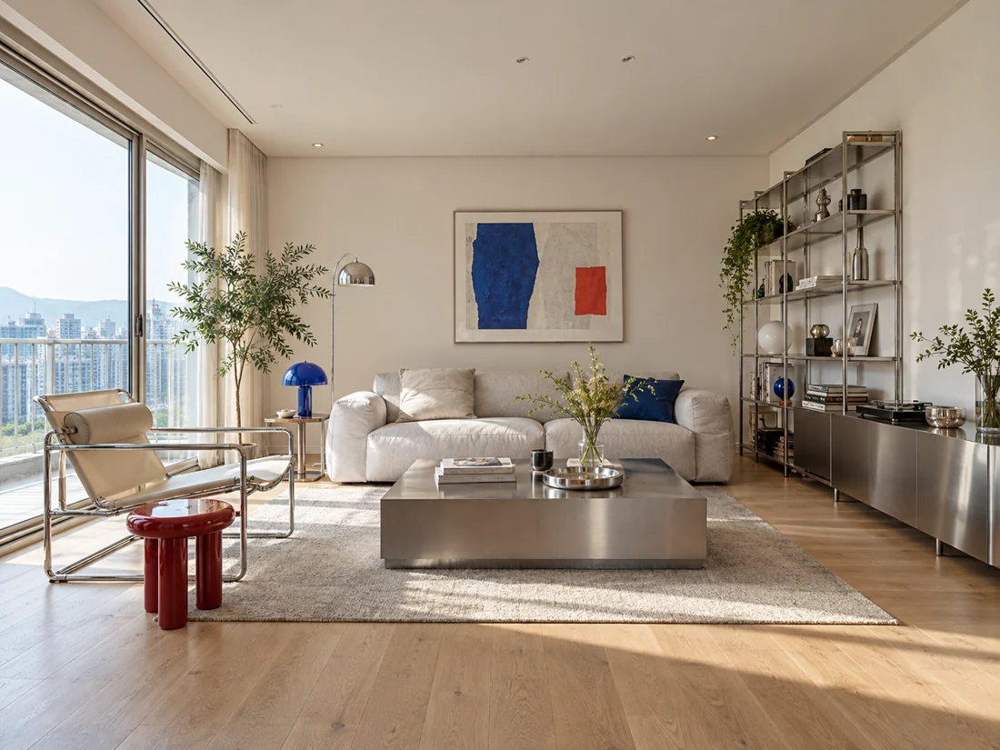

FIND YOUR ATMOSPHERE
스타일 이름은 몰라도 괜찮아요. 가장 끌리는 사진 하나만 골라주세요.선택한 분위기를 바탕으로, 우리 집에 맞는 공간을 함께 이야기해요.





사진은 분위기를 설명하기 위한 AI 참고 이미지이며, 디자인시선의 실제 시공사례가 아닙니다.사진과 같은 시공을 확정하는 단계가 아니며, 집의 구조와 생활에 맞춰 함께 다듬어갑니다.
마음이 가는 사진을 하나 골라주세요.
상담 내용 저장은 JavaScript를 사용합니다. 상담 신청폼에서 원하는 분위기를 알려주세요.